This is a simple guide for new admins.
→ Click any button in the left menu
→ A popup will open with clear, step-by-step help for that section
Everything is explained slowly — no rush, no previous knowledge needed.
• All important actions have a help popup — just click the menu item again if you forget something.
• Start with the Admin Login Guide if you're new.
• Main work happens in Collection and Heritage Collection.
• Check Enquiries and Support for messages from users.
• Use Employee section when managing staff.
How to Log In – Step-by-Step (Very Important!)
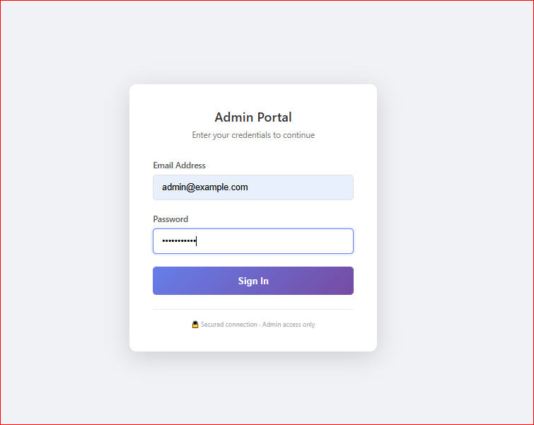
Important Security Rules – Read Carefully!
What to do if login fails
Collection has 4 main sub-sections.
Below are very long, step-by-step explanations for each one.
What this section is for:
This is where you make a new "folder" or "album" of content.
One collection = one topic (example: all reports about refugees in one place).
After you create it and set it to Public, visitors on tamilinformationcentere.org can see and download the PDFs/images.
Very detailed step-by-step instructions:
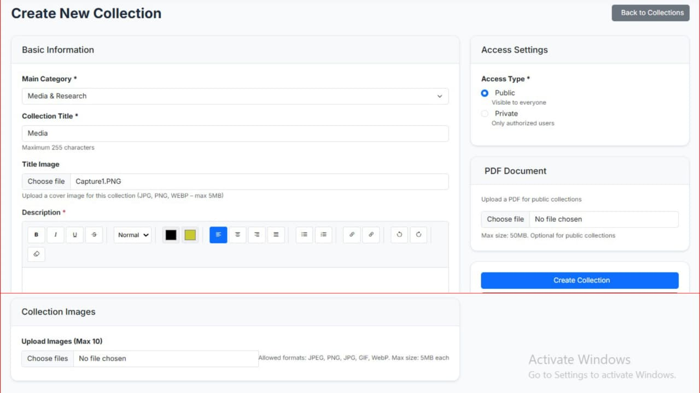
What this section is for:
This is the place where you look at all the collections you (or others) have already created.
You can:
- See a list of everything
- Open any collection to see full details (what visitors see on the website)
- Edit anything (change title, description, images, PDF, etc.)
- Delete collections you no longer want
Most of your daily work will happen here — checking, updating, or removing old content.
Part A – List View (Manage Collections Table)
This is the first screen you see when you go to View Collection.
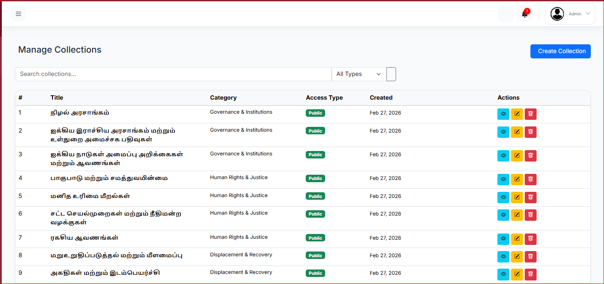
Part B – Single Collection Detail Page
When you click the eye icon () on any row, this page opens.
Part B – Single Collection Detail Page
When you click the eye icon () on any row, this page opens (example: /admin/collections/1).
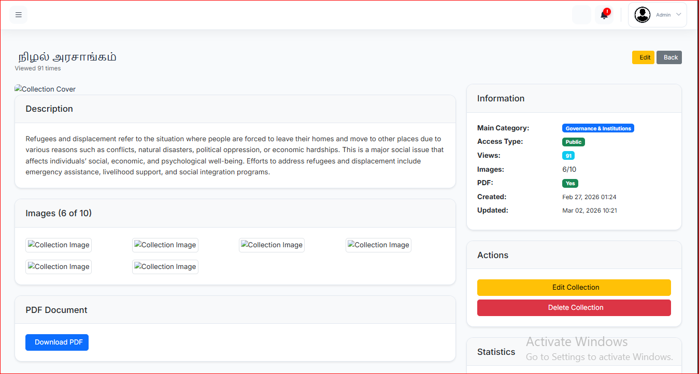
Part C – Edit Collection
Click yellow Edit button or pencil icon → opens almost same form as "Add Collection", but everything is already filled.
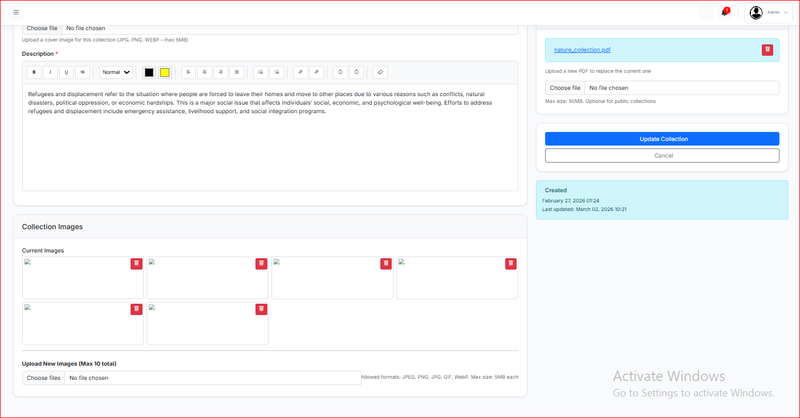
Part D – Delete Collection
Only delete when you are 100% sure — it is permanent.
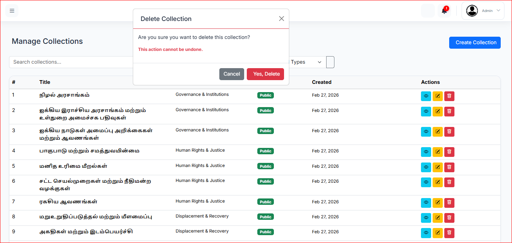
What this section is for:
Every time you add or edit a collection, you must choose a "Main Category" from a dropdown.
This page is where you create, change or remove those category names.
Examples of categories you already have: "Conflict, Resistance & Peace", "Human Rights & Justice", "Media & Research", etc.
Categories help organize content — good categories make the website easy to navigate.
Step-by-step – Main Categories List Page
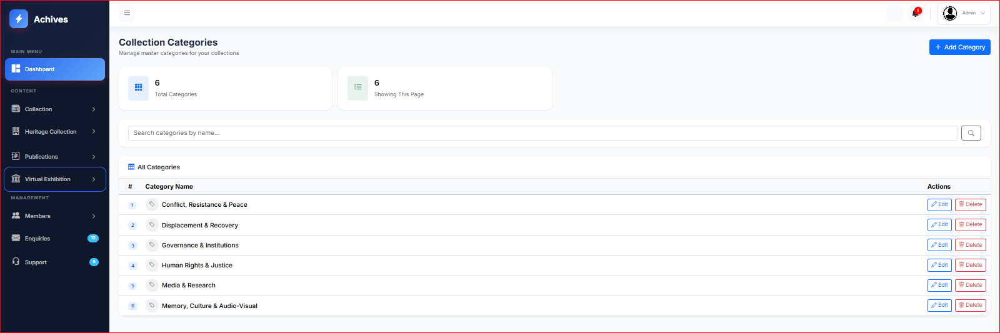
Adding a New Category
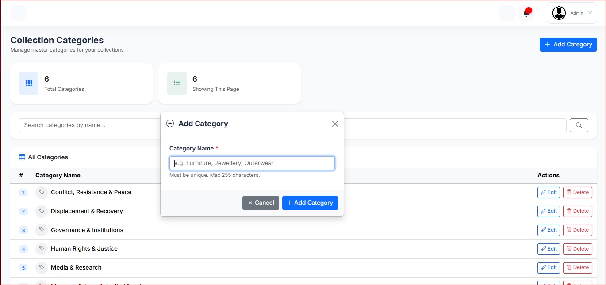
Editing an Existing Category
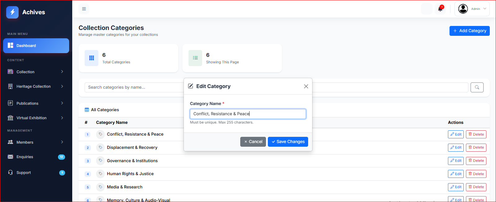
Deleting a Category
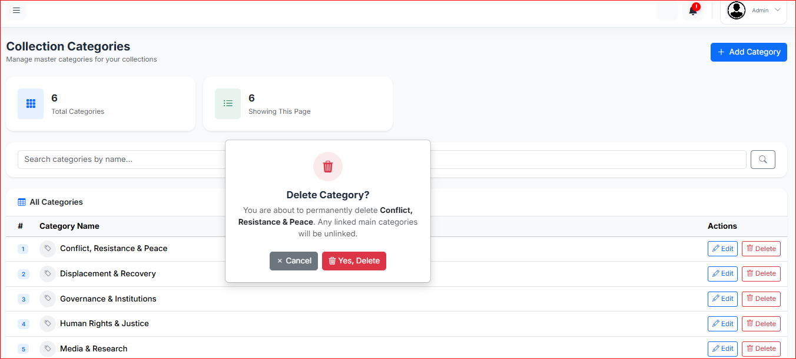
What this section is for:
When you create a collection and set it to Private, normal website visitors cannot see it.
Only logged-in authorized users (members/admins) can access it.
If a normal user wants to see a private collection, they can send an "access request" through the public website.
Those requests come here for you (Master Admin) to review, approve, or reject.
This section helps you control who gets special access to private/sensitive content.
How to open this page
What you see on the main screen
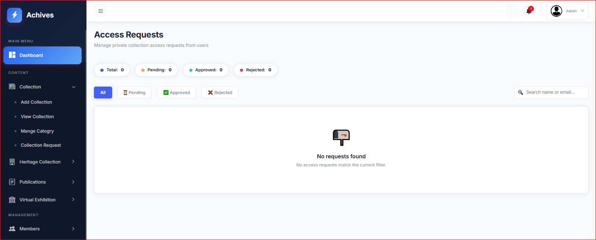
What happens when there ARE requests
When users send requests from the public website, this page fills up with rows. Each row shows:
How to handle a Pending request – Step-by-step
Heritage Collection has 4 main sub-sections, just like normal Collection.
What this does:
This creates a new heritage-focused collection.
It is very similar to "Add Collection", but meant for historical/cultural content.
Example: "Ancient Tamil Manuscripts", "Traditional Jewellery Photos", "War Memory Audio-Visuals".
Once Public, it appears in the heritage section of the website.
Very detailed step-by-step instructions:
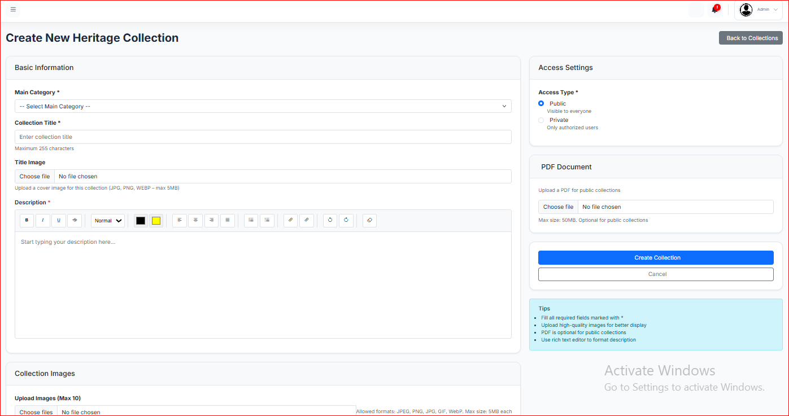
What this section is for:
This is the main screen to see all heritage collections you have created.
You can:
- View the full list of heritage items
- Open any item to see complete details (exactly how visitors see it on the public website)
- Edit anything (title, category, description, images, PDF, access type)
- Delete heritage collections that are no longer needed
This section works almost exactly like "View Collection" in the normal Collection menu, but only shows heritage-specific content.
Part A – List View (Manage Heritage Collections Table)
This is the first page you see when you go to "View Heritage Collections".
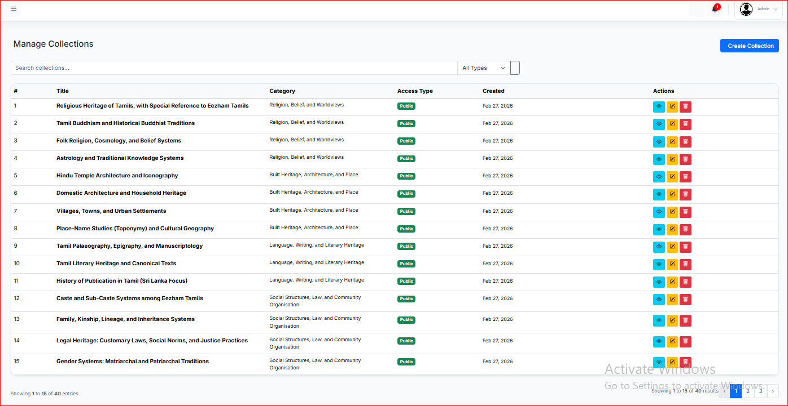
Part B – Single Heritage Collection Detail Page
Click the eye icon () on any row → opens full details (example: /admin/heritagecollections/1).
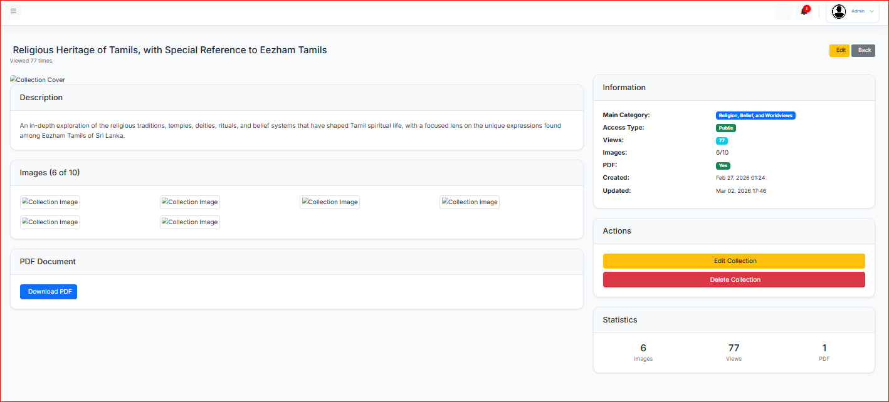
Part C – Edit Heritage Collection
Click yellow Edit button or pencil icon → opens edit form (almost same as Add Heritage Collection, but pre-filled).
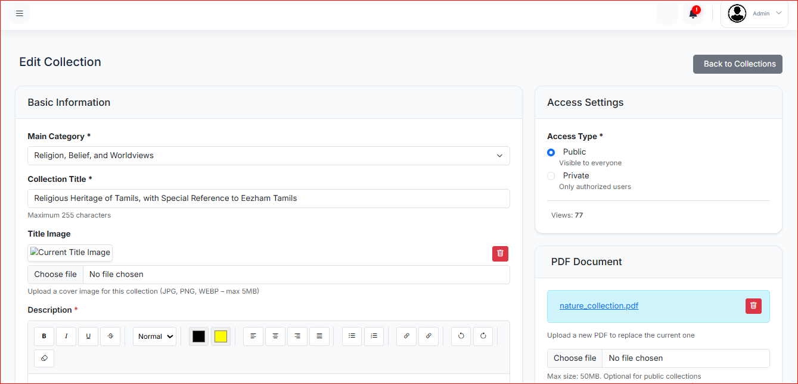
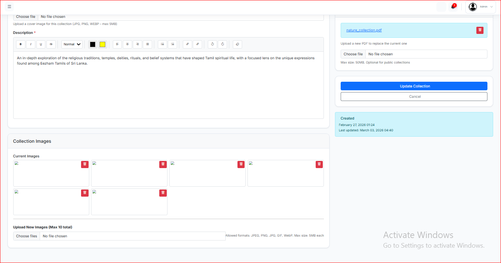
Part D – Delete Heritage Collection
Only delete when 100% sure — deletion is permanent.
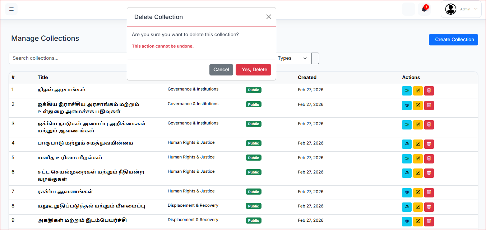
What this section is for:
This page lets you create, edit, or delete the main categories used in the dropdown when adding or editing heritage collections.
These categories are specific to heritage items (e.g. "Built Heritage, Architecture, and Place", "Religion, Belief, and Worldviews").
Good category management keeps heritage content organized on the public website.
Changing or deleting categories here affects only heritage collections — not normal collections.
How to open this page
What you see on the main screen
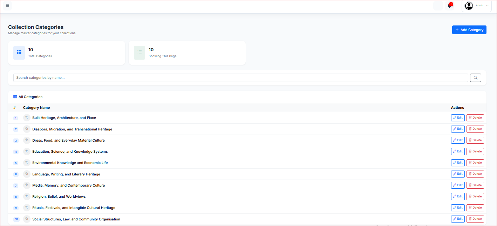
Adding a New Heritage Category
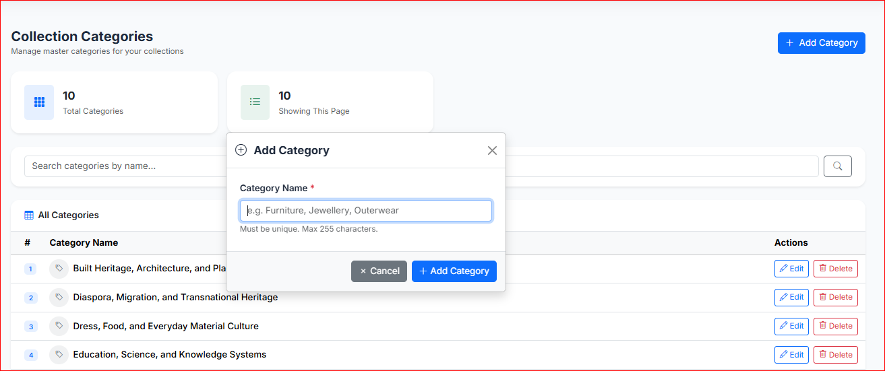
Editing an Existing Heritage Category
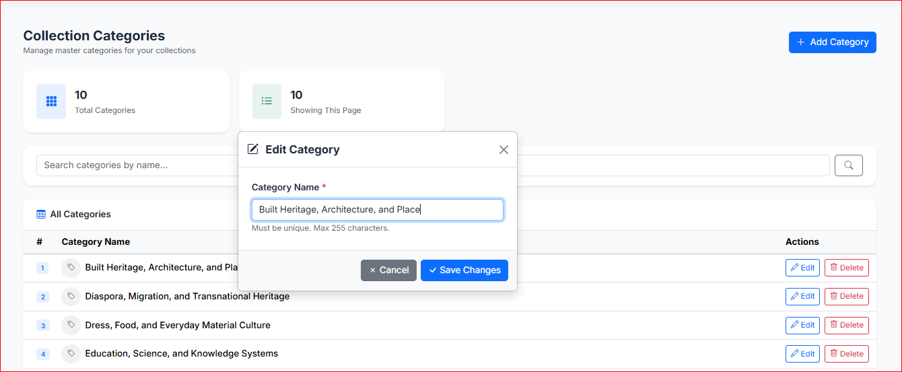
Deleting a Heritage Category
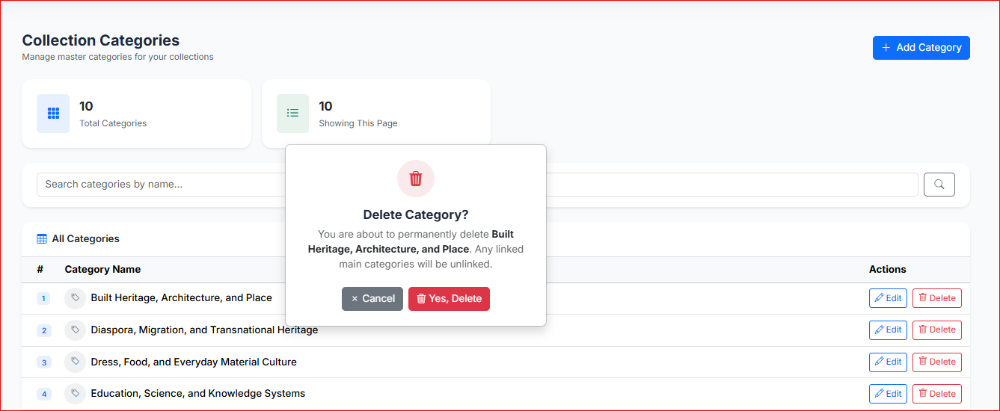
What this section is for:
Heritage collections can be set to Private — meaning only logged-in authorized users can view them.
If a regular website visitor wants access to a private heritage collection (e.g. old manuscripts, historical photos), they can submit an "access request" from the public site.
Those requests appear here for you (Master Admin) to review, approve, or reject.
This is the heritage-specific version of "Collection Request" — it only handles requests for heritage items.
How to open this page
What you see when there are no requests (empty state)
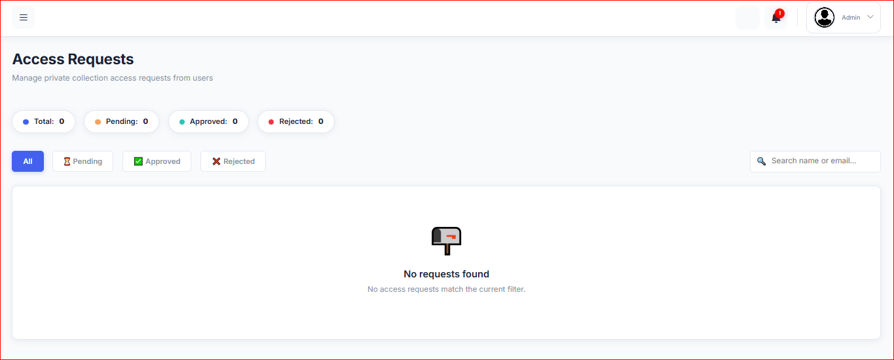
What happens when there ARE pending requests
When users request access to private heritage collections, rows appear instead of "No requests found".
Each row typically shows:
How to handle a Pending heritage access request – Step-by-step
Publications has 4 main sub-sections:
What this does:
This form lets you upload a new publication (usually one main PDF/document).
You add title, image, content description, category, price, access type, etc.
Once saved and set to Public/Free, visitors can view/download it from the website.
Very detailed step-by-step instructions:
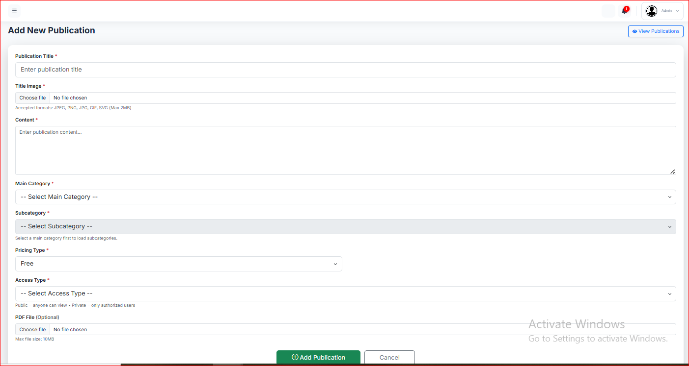
What this section is for:
This is the main list screen where you see every publication you have added (books, papers, magazines, etc.).
You can:
- Browse/search the full list
- See key info (title, image, category, price, visibility, etc.)
- Edit any publication (change title, price, image, PDF, etc.)
- Delete publications you no longer want
This is where you manage your published content daily — checking, updating, or removing items.
Part A – List View (All Publications Table)
This is the first page you see when you go to "View All".
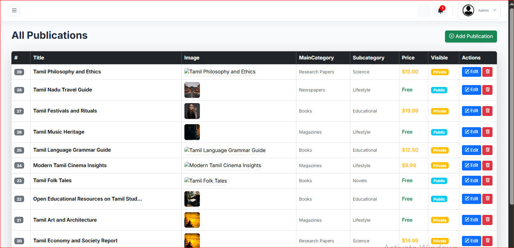
Part B – Editing a Publication
Click the blue Edit icon (pencil) on any row → opens an edit popup/modal with pre-filled data.
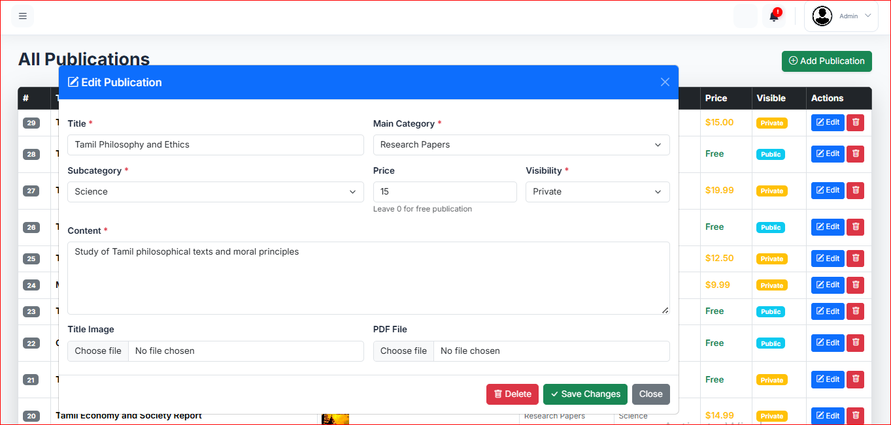
Part C – Deleting a Publication
Only delete when 100% sure — deletion is permanent.
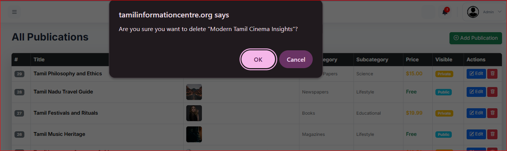
What this section is for:
This page controls the Main Categories and Subcategories used in the dropdowns when adding or editing publications.
Main categories are top-level (e.g. Books, Magazines, Newspapers, Research Papers).
Each main category can have subcategories (e.g. Books → Educational, Novels).
Proper category management helps organize publications on the public website and makes searching/filtering easier for visitors.
How to open this page
What you see on the main screen
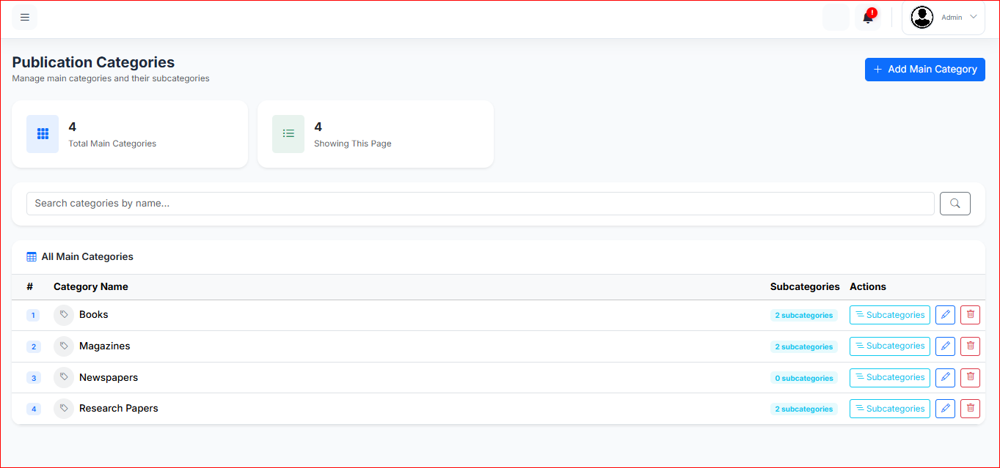
Adding a New Main Category
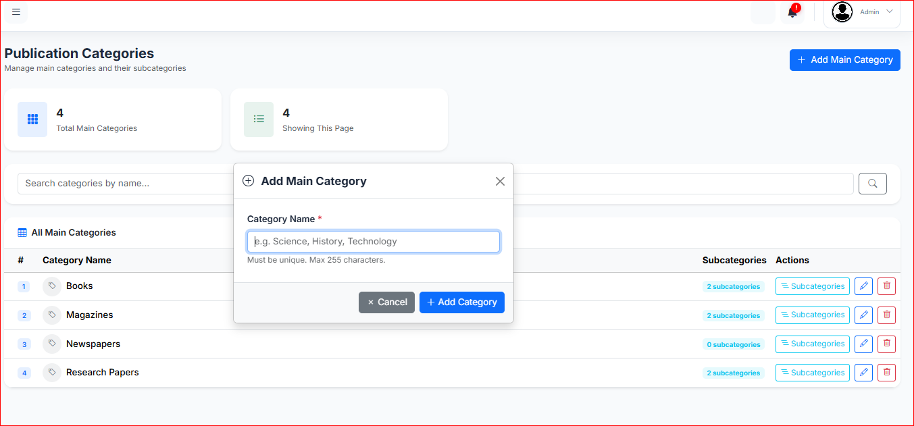
Managing Subcategories (for any Main Category)
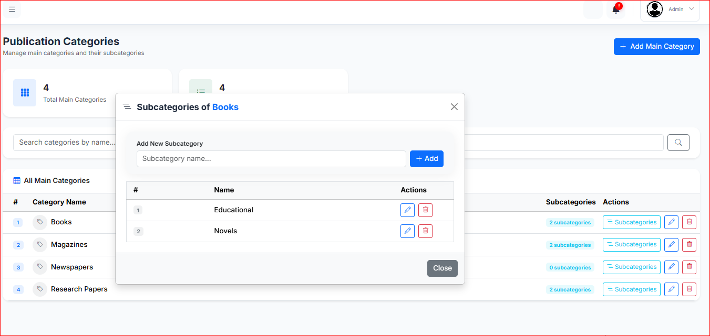
Editing a Main Category
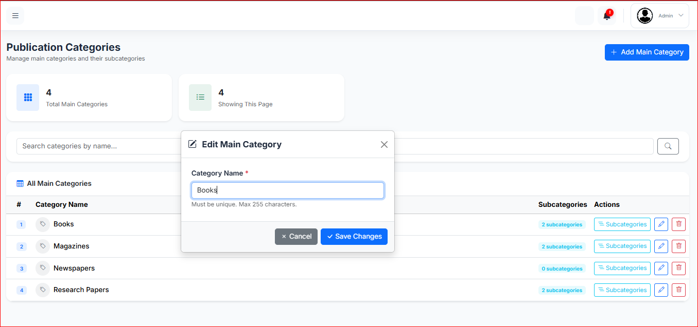
Deleting a Main Category
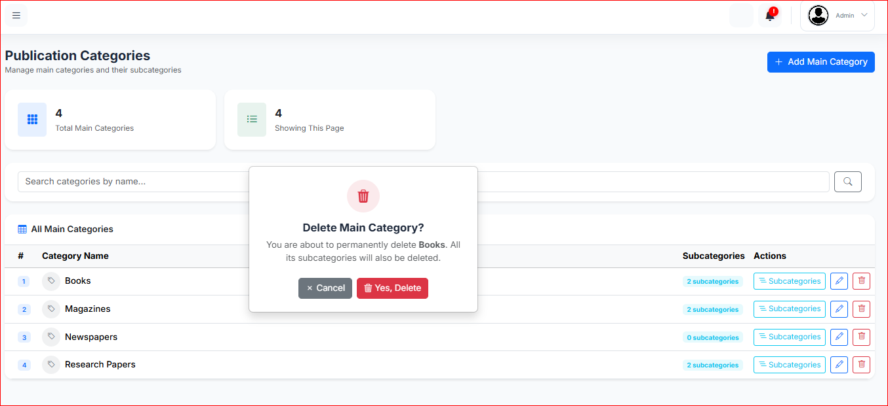
What this section is for:
This page shows all orders placed by users for **paid publications** (books, reports, etc. with price > 0).
You (Master Admin) can:
- See who bought what
- Check order details (user name, email, phone, status, date)
- Update order status (e.g. pending → completed, delivered)
- View or contact the buyer if needed
Currently shows "No orders available" because no paid purchases have been made yet (or only free publications exist).
How to open this page
What you see when there are no orders (empty state)
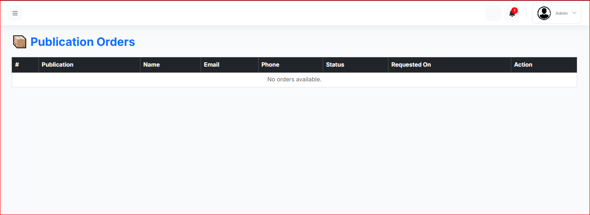
What happens when there ARE orders
When users buy paid publications, rows appear in the table. Each row typically includes:
How to manage an order – Step-by-step (when orders exist)
Virtual Exhibition has 3 main sub-sections:
What this does:
This form creates a new virtual exhibition — like setting up a digital museum room.
You add basic info (title, category, location), description, cover/gallery images, virtual tour link (optional), and multiple artifacts (each with its own image/description/file).
Very detailed step-by-step instructions:
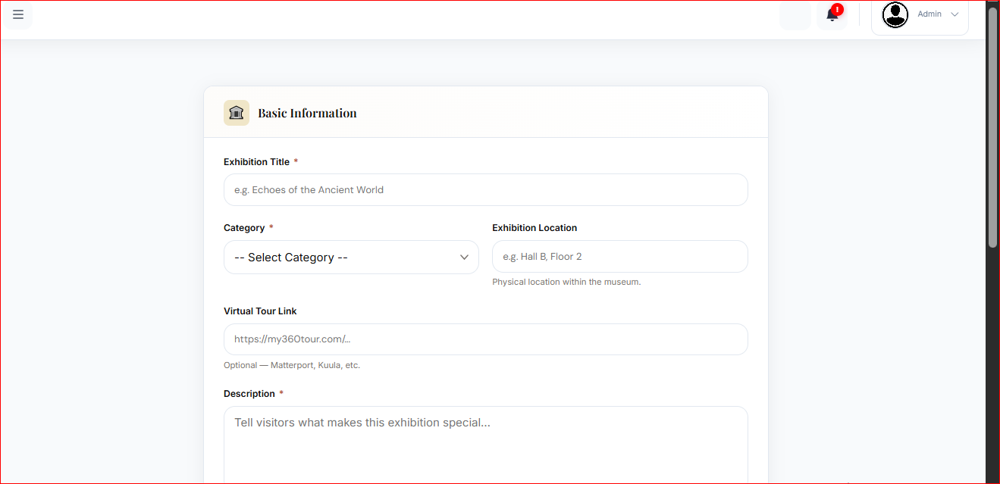
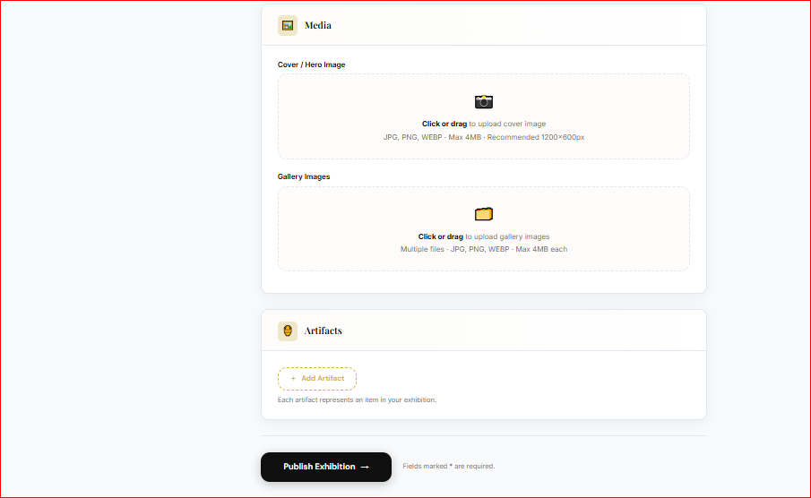
What this section is for:
This is the main listing page where you see all virtual exhibitions you have created.
You can:
- View the full list (with search and category filter)
- Open any exhibition to see full details (cover, gallery, artifacts, description, tour link)
- Edit existing exhibitions (change title, images, artifacts, etc.)
- Delete exhibitions you no longer need
Currently empty ("No exhibitions found") because none have been created yet — click "Create First Exhibition" or "+ New Exhibition" to start adding.
How to reach this page
What you see when there are no exhibitions (empty state)
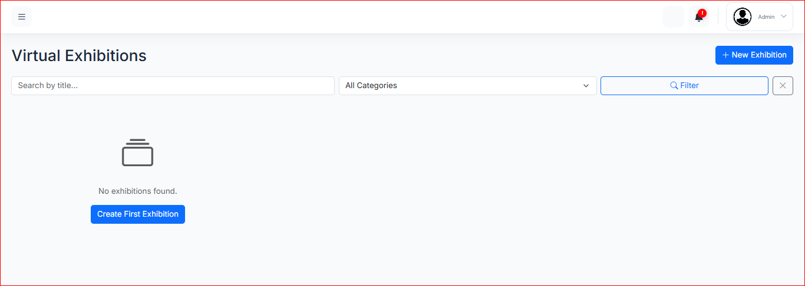
What happens when exhibitions exist
Once you add exhibitions, the page shows a table or card list instead of "No exhibitions found".
Each entry typically includes:
How to manage exhibitions – Step-by-step
What this section is for:
This page lets you create, edit, or delete the categories used in the dropdown when adding or editing virtual exhibitions.
Categories help organize exhibitions (e.g. "Art", "History", "Culture", "Ancient Artifacts").
Each category can have an optional image (shown in listings).
Good category management makes it easier for visitors to browse exhibitions on the public website.
How to open this page
What you see on the main screen
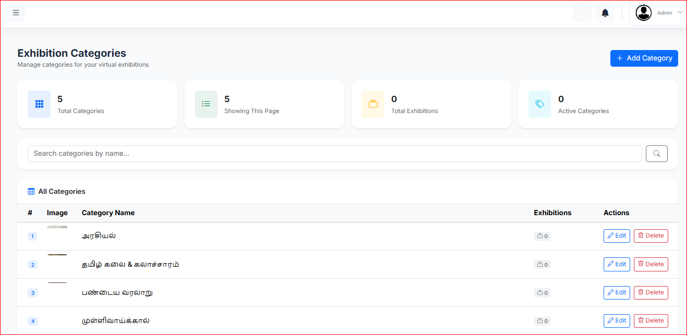
Adding a New Exhibition Category
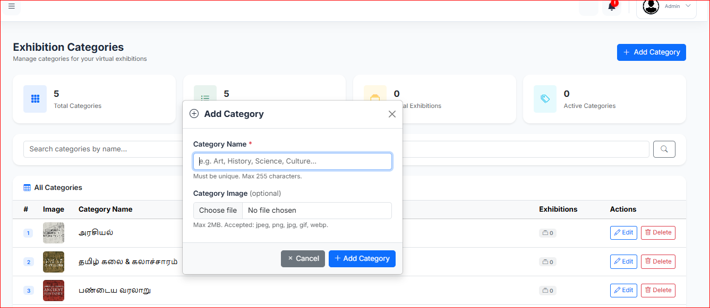
Editing an Existing Exhibition Category
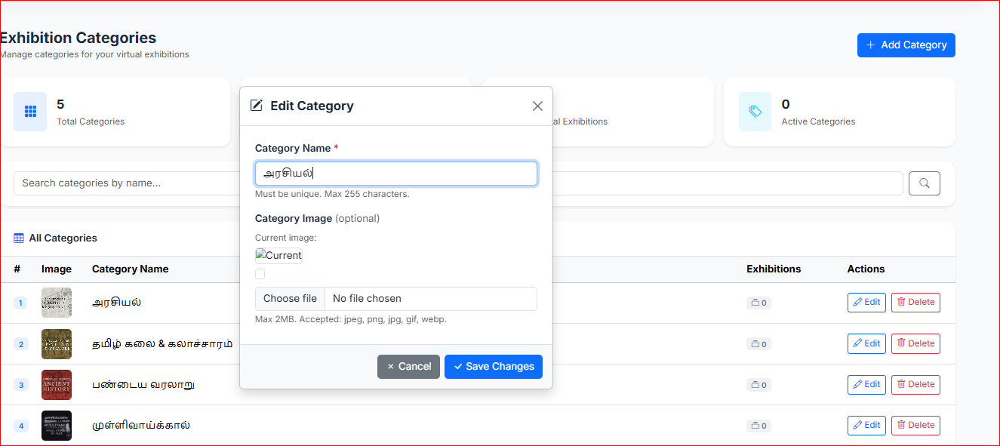
Deleting an Exhibition Category
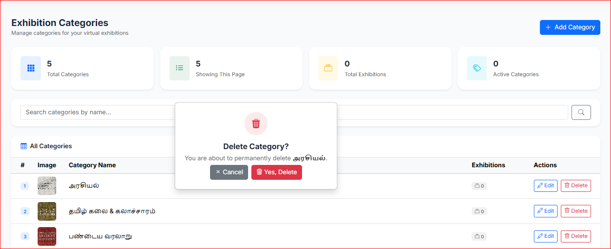
Enquiries has **one main view** (All Enquiries list) — no separate sub-sections.
What this page does:
This is the central dashboard for all incoming enquiries from the public website.
You can:
- See a table of all messages
- Filter/search by name, email, subject, status, date
- View full message content
- Change status (e.g. Pending → Replied)
- Reply directly (if integrated) or note actions taken
How to open this page
What you see on the main screen
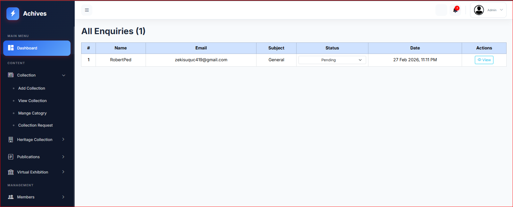
How to handle an enquiry – Step-by-step
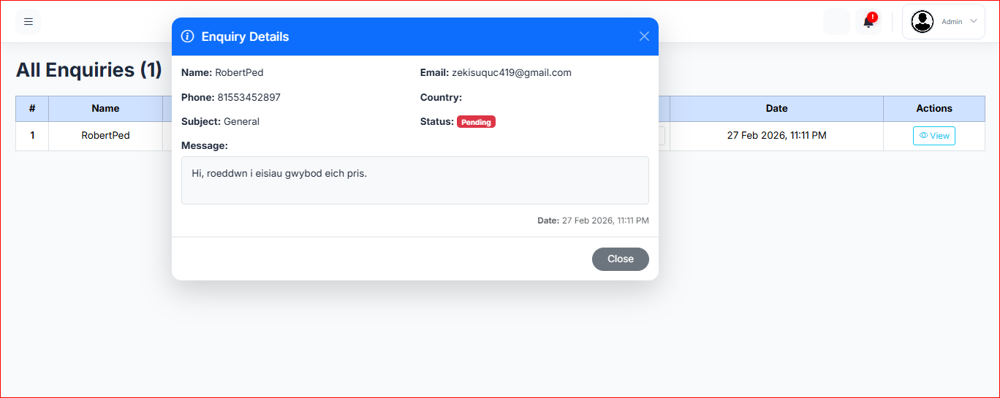